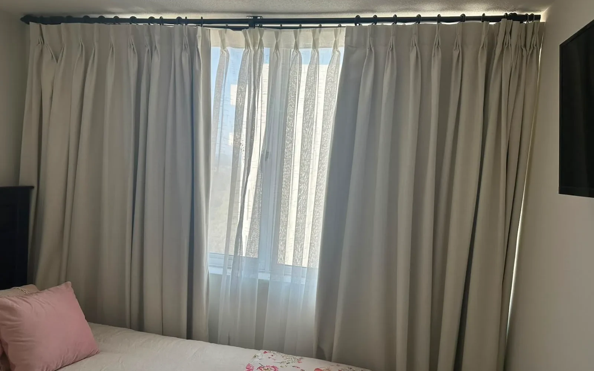

Hay una pregunta que aparece seguido cuando se buscan cortinas: ¿opacas o voile? La respuesta depende del cuarto, del horario y de lo que necesitas que haga la cortina. Las cortinas opacas no son simplemente cortinas gruesas. Son un tipo específico de tela que bloquea la luz y el calor, y cuando se confeccionan a medida marcan una diferencia real.
En Sastrería La Reina llevamos años confeccionando cortinas opacas para departamentos, casas y oficinas en Santiago. En este artículo te explicamos cómo funcionan, cuándo usarlas y qué telas elegir.
¿Qué son las cortinas opacas?
Las cortinas opacas están fabricadas con telas densas que impiden el paso de la luz exterior. A diferencia de las cortinas voile o de telas livianas, que dejan entrar luminosidad, las opacas crean oscuridad total o casi total en el ambiente.
Esto las hace ideales para:
- Dormitorios donde se necesita oscuridad para dormir
- Habitaciones de bebés
- Salas de cine o TV
- Espacios con exposición directa al sol
- Ambientes donde se trabaja de noche o en turnos
Si tienes alguna de estas necesidades, lo más recomendable es hablar directamente con nosotros. Puedes hacerlo por WhatsApp o visitar el taller en La Reina.
¿Cuál es la diferencia entre cortinas opacas y blackout?
Mucha gente usa ambos términos como sinónimos, pero hay una diferencia importante:
- Cortinas opacas: reducen la luz de manera significativa, pero no necesariamente de forma total. Pueden dejar filtrar algo de luz en los bordes.
- Cortinas blackout: bloquean la luz por completo gracias a un tejido especial o una capa de forro. Son el nivel máximo de opacidad.
En la práctica, cuando alguien pide cortinas opacas, generalmente quiere el efecto blackout. La diferencia real está en la tela y en cómo se confecciona.
¿Las cortinas opacas también aíslan del frío?
Sí, y este es uno de sus beneficios menos conocidos. Las telas densas que bloquean la luz también actúan como barrera térmica. Funcionan bien para:
- Reducir la pérdida de calor en invierno
- Impedir el ingreso de calor en verano
- Mejorar el aislamiento acústico del espacio
Este doble beneficio —luz y temperatura— es lo que hace que muchas personas las elijan para el dormitorio principal, especialmente en departamentos con ventanales grandes.
Si quieres seguir nuestros trabajos y ver ejemplos reales, puedes encontrarnos en Facebook e Instagram.
Telas más usadas para cortinas opacas
La opacidad depende directamente de la tela. Estas son las opciones más solicitadas en nuestro taller:
Blackout estándar
Tela técnica de tres capas que bloquea el 100% de la luz. Es la más buscada para dormitorios. Viene en múltiples colores y es fácil de mantener.
Blackout de lino
Combina la opacidad del blackout con la textura natural del lino. Es más elegante visualmente y se integra bien a interiores modernos o nórdicos.
Terciopelo
Alta opacidad y muy buen aislamiento térmico. Más formal. Ideal para living o dormitorio matrimonial con decoración clásica.
Telas dobles (voile + forro opaco)
Permiten tener dos ambientes en uno: de día se usa el voile que tamiza la luz, de noche se cierra el forro opaco. Es la solución más completa y versátil.

¿Por qué es importante que sean a medida?
Una cortina opaca estándar de tienda cumple parte de su función, pero siempre quedan huecos. Por los lados, por arriba o por abajo entra luz y se pierde gran parte del aislamiento.
Las cortinas a medida se confeccionan para cubrir exactamente la ventana, sin espacios. Esto significa:
- Oscuridad real en la habitación
- Mejor aislamiento del frío
- Mejor aislamiento del calor en verano
- Resultado estético más prolijo
En nuestro taller tomamos las medidas directamente o guiamos al cliente paso a paso para que llegue con los datos correctos. Puedes contactarnos desde el formulario de contacto o directamente por WhatsApp.
Tipos de instalación para cortinas opacas
El riel o barra también influye en el resultado final. Algunas opciones populares:
- Argollas o ganchos: permiten que la cortina corra fácilmente
- Pinch pleat o plisado: más formal y estructurado
- Ojalillos metálicos: moderno y práctico
- Sin cabezal visible: efecto minimalista
Cada tipo de instalación tiene un comportamiento distinto en términos de caída y apariencia. Lo ideal es elegirlo considerando el estilo del espacio.
¿Cuánto duran las cortinas opacas?
Con un cuidado básico —aspirar con frecuencia, lavar en frío cuando corresponda y evitar la exposición directa prolongada al sol— las cortinas opacas de buena calidad duran varios años sin perder su función.
Las telas técnicas como el blackout son especialmente resistentes. El lino y el terciopelo requieren algo más de cuidado, pero bien mantenidos se ven igual de bien durante mucho tiempo.
¿Cómo pedir cortinas opacas a medida en Santiago?
El proceso en Sastrería La Reina es directo:
- Nos contactas por WhatsApp o en el taller
- Te orientamos sobre telas y terminaciones según tu espacio
- Tomamos medidas o te guiamos para que las tomes tú
- Confeccionamos y entregamos en el tiempo acordado
Estamos ubicados en Monseñor Edwards 1376, esquina La Cañada, La Reina. Atendemos de lunes a sábado.
👉 Escríbenos por WhatsApp para cotizar
Preguntas frecuentes sobre cortinas opacas
¿Las cortinas opacas sirven para cualquier habitación?
Sí, aunque se usan más en dormitorios y salas de TV. En el living se suelen combinar con voile para tener más flexibilidad de luz durante el día.
¿Opaca es lo mismo que blackout?
No exactamente. El blackout es el nivel máximo de opacidad. Una cortina opaca puede dejar pasar algo de luz difusa. La diferencia está en la tela y en la confección.
¿Se pueden lavar las cortinas opacas?
Depende de la tela. El blackout estándar generalmente se lava en frío y en ciclo delicado. El lino y el terciopelo pueden requerir lavado en seco. Siempre consultar etiqueta o al fabricante.
¿Las cortinas opacas a medida son más caras que las estándar?
Son una inversión mayor en el corto plazo, pero ofrecen mejor resultado y duran más. Al no quedar huecos ni tener que reemplazarlas pronto, el costo a largo plazo suele ser menor.
¿Pueden confeccionar cortinas opacas en colores específicos?
Sí. Contamos con una variedad de telas y colores. Si tienes un tono específico en mente, lo buscamos o te asesoramos para encontrar la mejor alternativa disponible.
¿Cuánto demoran en confeccionarse?
En promedio entre 7 y 14 días hábiles dependiendo de la cantidad y complejidad. Para proyectos urgentes puedes consultarnos directamente y vemos opciones.